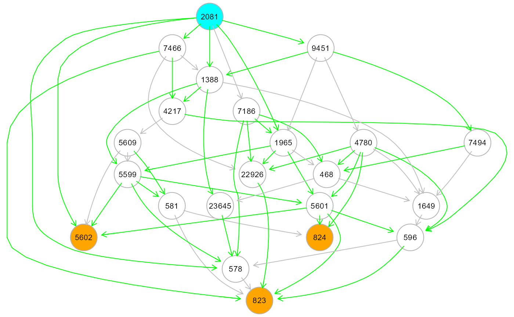
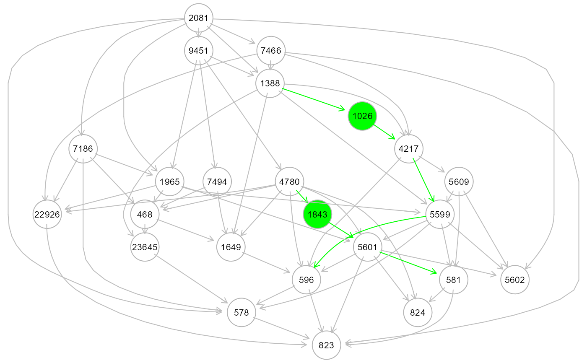
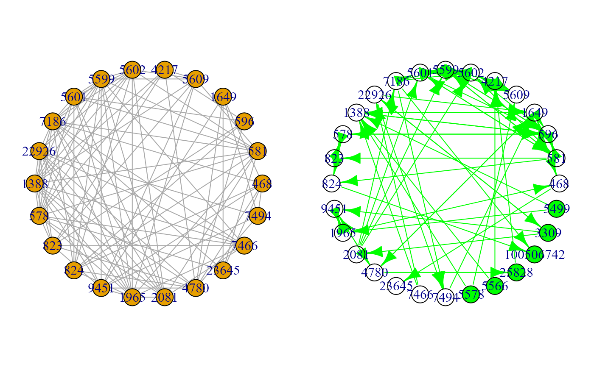

An input directed graph is re-sized, removing edges or adding edges/nodes. This function takes three input graphs: the first is the input causal model (i.e., a directed graph), and the second can be either a directed or undirected graph, providing a set of connections to be checked against a directed reference network (i.e., the third input) and imported to the first graph.
resizeGraph(g = list(), gnet, d = 2, v = TRUE, verbose = FALSE, ...)A list of two graphs as igraph objects, g=list(graph1, graph2).
External directed network as an igraph object. The reference
network should have weighted edges, corresponding to their interaction
p-values, as an edge attribute E(gnet)$pv. Then, connections in
graph2 will be checked by known connections from the reference network,
intercepted by the minimum-weighted shortest path found among the equivalent
ones by the Dijkstra algorithm, as implemented in the igraph function
all_shortest_paths().
An integer value indicating the maximum geodesic distance between
two nodes in the interactome to consider the inferred interaction between
the same two nodes in graph2 as validated, otherwise the edges are
removed. For instance, if d = 2, two interacting nodes must either
share a direct interaction or being connected through at most one mediator
in the reference interactome (in general, at most d - 1 mediators are
allowed). Typical d values include 2 (at most one mediator), or
mean_distance(gnet) (i.e., the average shortest path length for
the reference network). Setting d = 0, is equivalent to gnet = NULL.
A logical value. If TRUE (default) new nodes and edges on the validated shortest path in the reference interactome will be added in the re-sized graph.
A logical value. If FALSE (default), the processed graphs will not be plotted to screen, saving execution time (for large graphs)
Currently ignored.
"Ug", the re-sized graph, the graph union of the causal graph graph1
and the re-sized graph graph2
Typically, the first graph is an estimated causal graph (DAG),
and the second graph is the output of SEMdag or
an external covariance graph. In the former we use the new inferred
causal structure stored in the dag.new object. In the latter, we
use the new inferred covariance structure stored in the covariance graph
object. Both directed (causal) edges and covariances (i.e., bidirected
edges) highlight emergent hidden topological proprieties, absent in the
input graph. Estimated directed edges between nodes X and Y
are interpreted as either direct links or direct paths mediated by hidden
connector nodes. Covariances between any two bow-free nodes X and Y may
hide causal relationships, not explicitly represented in the current model.
Conversely, directed (or bi-directed) edges could be redundant or artifact,
specific to the observed data and could be deleted.
Function resizeGraph() leverage on these concepts to extend/reduce a
causal model, importing new connectors or deleting estimated edges, if they are
present or absent in a given reference network. The whole process may lead to
the discovery of new paths of information flow, and cut edges not corroborate
by a validated network. Since added nodes can already be present in the causal
graph, network resize may create cross-connections between old and new paths
and their possible closure into circuits.
Palluzzi F, Grassi M (2021). SEMgraph: An R Package for Causal Network Analysis of High-Throughput Data with Structural Equation Models. <arXiv:2103.08332>
# \donttest{
# Extract the "Protein processing in endoplasmic reticulum" pathway:
g <- kegg.pathways[["Protein processing in endoplasmic reticulum"]]
G <- properties(g)[[1]]; summary(G)
#> Frequency distribution of graph components
#>
#> n.nodes n.graphs
#> 1 7 1
#> 2 10 1
#> 3 12 1
#> 4 26 1
#>
#> Percent of vertices in the giant component: 15.2 %
#>
#> is.simple is.dag is.directed is.weighted
#> TRUE FALSE TRUE TRUE
#>
#> which.mutual.FALSE
#> 34
#> IGRAPH 78a3419 DNW- 26 34 --
#> + attr: name (v/c), weight (e/n)
# Extend a graph using new inferred DAG edges (dag+dag.new):
library(huge)
als.npn <- huge.npn(alsData$exprs)
#> Conducting the nonparanormal (npn) transformation via shrunkun ECDF....done.
dag <- SEMdag(graph = G, data = als.npn, beta = 0.1)
#> WARNING: input graph is not acyclic !
#> Applying graph -> DAG conversion...
#> DAG conversion : TRUE
#> Node Linear Ordering with TO setting
#>
gplot(dag$dag)

ext <- resizeGraph(g=list(dag$dag, dag$dag.new), gnet = kegg, d = 2)
#>
edge set= 1 of 46
edge set= 2 of 46
edge set= 3 of 46
edge set= 4 of 46
edge set= 5 of 46
edge set= 6 of 46
edge set= 7 of 46
edge set= 8 of 46
edge set= 9 of 46
edge set= 10 of 46
edge set= 11 of 46
edge set= 12 of 46
edge set= 13 of 46
edge set= 14 of 46
edge set= 15 of 46
edge set= 16 of 46
edge set= 17 of 46
edge set= 18 of 46
edge set= 19 of 46
edge set= 20 of 46
edge set= 21 of 46
edge set= 22 of 46
edge set= 23 of 46
edge set= 24 of 46
edge set= 25 of 46
edge set= 26 of 46
edge set= 27 of 46
edge set= 28 of 46
edge set= 29 of 46
edge set= 30 of 46
edge set= 31 of 46
edge set= 32 of 46
edge set= 33 of 46
edge set= 34 of 46
edge set= 35 of 46
edge set= 36 of 46
edge set= 37 of 46
edge set= 38 of 46
edge set= 39 of 46
edge set= 40 of 46
edge set= 41 of 46
edge set= 42 of 46
edge set= 43 of 46
edge set= 44 of 46
edge set= 45 of 46
edge set= 46 of 46
#>
#> n. edges to be evaluated: 46
#> n. edges selected from interactome: 16
#>
gplot(ext)

# Create a directed graph from correlation matrix, using
# i) an empty graph as causal graph,
# ii) a covariance graph,
# iii) KEGG as reference:
corr2graph<- function(R, n, alpha=5e-6, ...)
{
Z <- qnorm(alpha/2, lower.tail=FALSE)
thr <- (exp(2*Z/sqrt(n-3))-1)/(exp(2*Z/sqrt(n-3))+1)
A <- ifelse(abs(R) > thr, 1, 0)
diag(A) <- 0
return(graph_from_adjacency_matrix(A, mode="undirected"))
}
v <- which(colnames(als.npn) %in% V(G)$name)
selectedData <- als.npn[, v]
G0 <- make_empty_graph(n = ncol(selectedData))
V(G0)$name <- colnames(selectedData)
G1 <- corr2graph(R = cor(selectedData), n= nrow(selectedData))
ext <- resizeGraph(g=list(G0, G1), gnet = kegg, d = 2, v = TRUE)
#>
edge set= 1 of 130
edge set= 2 of 130
edge set= 3 of 130
edge set= 4 of 130
edge set= 5 of 130
edge set= 6 of 130
edge set= 7 of 130
edge set= 8 of 130
edge set= 9 of 130
edge set= 10 of 130
edge set= 11 of 130
edge set= 12 of 130
edge set= 13 of 130
edge set= 14 of 130
edge set= 15 of 130
edge set= 16 of 130
edge set= 17 of 130
edge set= 18 of 130
edge set= 19 of 130
edge set= 20 of 130
edge set= 21 of 130
edge set= 22 of 130
edge set= 23 of 130
edge set= 24 of 130
edge set= 25 of 130
edge set= 26 of 130
edge set= 27 of 130
edge set= 28 of 130
edge set= 29 of 130
edge set= 30 of 130
edge set= 31 of 130
edge set= 32 of 130
edge set= 33 of 130
edge set= 34 of 130
edge set= 35 of 130
edge set= 36 of 130
edge set= 37 of 130
edge set= 38 of 130
edge set= 39 of 130
edge set= 40 of 130
edge set= 41 of 130
edge set= 42 of 130
edge set= 43 of 130
edge set= 44 of 130
edge set= 45 of 130
edge set= 46 of 130
edge set= 47 of 130
edge set= 48 of 130
edge set= 49 of 130
edge set= 50 of 130
edge set= 51 of 130
edge set= 52 of 130
edge set= 53 of 130
edge set= 54 of 130
edge set= 55 of 130
edge set= 56 of 130
edge set= 57 of 130
edge set= 58 of 130
edge set= 59 of 130
edge set= 60 of 130
edge set= 61 of 130
edge set= 62 of 130
edge set= 63 of 130
edge set= 64 of 130
edge set= 65 of 130
edge set= 66 of 130
edge set= 67 of 130
edge set= 68 of 130
edge set= 69 of 130
edge set= 70 of 130
edge set= 71 of 130
edge set= 72 of 130
edge set= 73 of 130
edge set= 74 of 130
edge set= 75 of 130
edge set= 76 of 130
edge set= 77 of 130
edge set= 78 of 130
edge set= 79 of 130
edge set= 80 of 130
edge set= 81 of 130
edge set= 82 of 130
edge set= 83 of 130
edge set= 84 of 130
edge set= 85 of 130
edge set= 86 of 130
edge set= 87 of 130
edge set= 88 of 130
edge set= 89 of 130
edge set= 90 of 130
edge set= 91 of 130
edge set= 92 of 130
edge set= 93 of 130
edge set= 94 of 130
edge set= 95 of 130
edge set= 96 of 130
edge set= 97 of 130
edge set= 98 of 130
edge set= 99 of 130
edge set= 100 of 130
edge set= 101 of 130
edge set= 102 of 130
edge set= 103 of 130
edge set= 104 of 130
edge set= 105 of 130
edge set= 106 of 130
edge set= 107 of 130
edge set= 108 of 130
edge set= 109 of 130
edge set= 110 of 130
edge set= 111 of 130
edge set= 112 of 130
edge set= 113 of 130
edge set= 114 of 130
edge set= 115 of 130
edge set= 116 of 130
edge set= 117 of 130
edge set= 118 of 130
edge set= 119 of 130
edge set= 120 of 130
edge set= 121 of 130
edge set= 122 of 130
edge set= 123 of 130
edge set= 124 of 130
edge set= 125 of 130
edge set= 126 of 130
edge set= 127 of 130
edge set= 128 of 130
edge set= 129 of 130
edge set= 130 of 130
#>
#> n. edges to be evaluated: 130
#> n. edges selected from interactome: 72
#>
#Graphs
old.par <- par(no.readonly = TRUE)
par(mfrow=c(1,2), mar=rep(1,4))
plot(G1, layout = layout.circle)
plot(ext, layout = layout.circle)

par(old.par)
# }